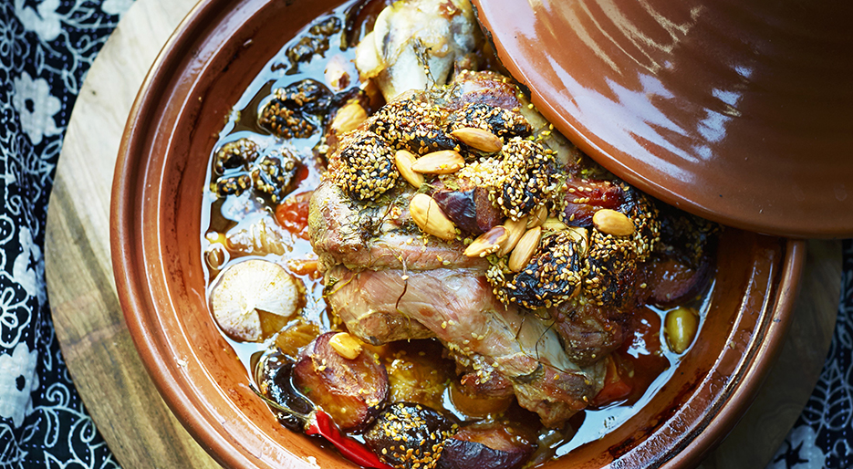

Lamb tajine with prunes

Description
Made with a combination of meat, vegetables, spices, dried fruit and nuts, this dish is typically cooked in its earthenware namesake.
Ingredients
- 2.2 lb (1 kg) deboned lamb shoulder, trimmed and cubed
- 6 garlic cloves, chopped
- 2 tbsp (30 ml) olive oil
- 1 tbsp sweet paprika
- 1 tbsp ground ginger
- 2 tsp ground cinnamon
- 2 tsp ground turmeric
- 2 cups (500 ml) chicken broth
- 1 cup (200 g) pitted prunes
- 1/4 cup (40 g) roasted blanched almonds
- 2 tbsp (30 ml) honey
Instructions
- With the rack in the lowest position, preheat the oven to 325°F (165°C).
- In a large skillet over medium-high heat, brown half of the lamb cubes and garlic at a time in the oil. Season with salt and pepper. Return the meat to the skillet and add the spices, stirring to coat the meat. Add the broth and bring to a boil.
- Transfer to a tagine or Dutch oven. Cover and bake for 1 hour. Add the prunes, almonds and honey. Continue baking covered for 1 hour or until the meat is fork tender.
- Serve the tagine.
Return to home